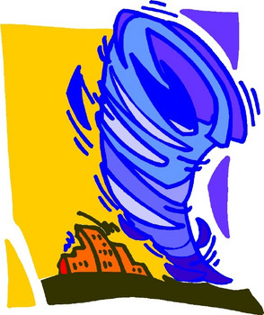

Disaster Preparedness:nephron.com's interactive forms for potential evacuees Houston, 6/5/2006. The Nephron Information Center disasters page has created interactive forms that will assist dialysis patients who must evacuate if a storm or other disaster threatens their area. These are based upon the Microsoft Excel form created by the National Disaster Coalition. The forms can either be printed and then completed by the patient along with a dialysis nurse, social worker or provider. Also, the forms can be completed online and then printed. This process is made easier by using special dropdown menus where types in the value (like number of days) if we did not already include it. The form has not been designed to capture and save data, just print it. It is in Adobe Acrobat's "pdf" format. Any questions or suggestions on how to make the form even easier to use will be appreciated at info@nephron.com The National Kidney Foundation is hosting the help website for disaster preparedness. More information about disaster preparedness from nephron.com can be found at disasters
DISCLAIMER: This information does not constitute medical advice, and is for information and
education purposes only. We cannot answer questions nor give any advice through e-mail.
Please consult your physician for specific treatment recommendations. The information obtained
through this service, and the information which you receive through the Internet is only for
general guideline purposes, and is not an ultimate source of information, nor something which
you should rely on as a sole source for your medical care. All medical and therapeutic decisions
must come from your health care provider. The authors, editors, producers, sponsors, and
contributors shall have no liability, obligation or responsibility to any person or entity for
any loss, damage, adverse consequence alleged to have happened directly or indirectly as a
consequence of this material.
About the Author: Stephen Z. Fadem, M.D. —
© 1996–2026 Stephen Z. Fadem, M.D., FACP, all rights reserved. —
Full Disclaimer
|
 nephron.org
nephron.org